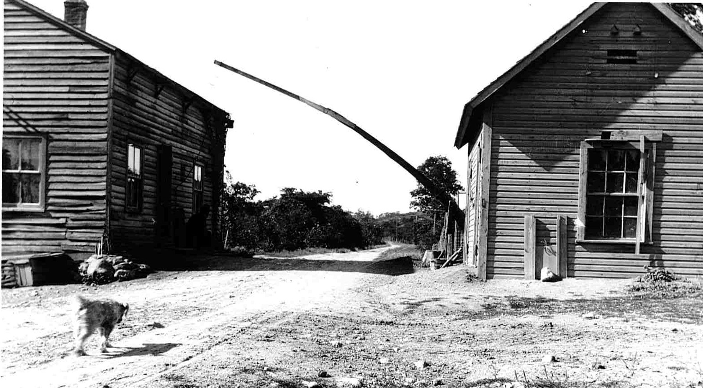
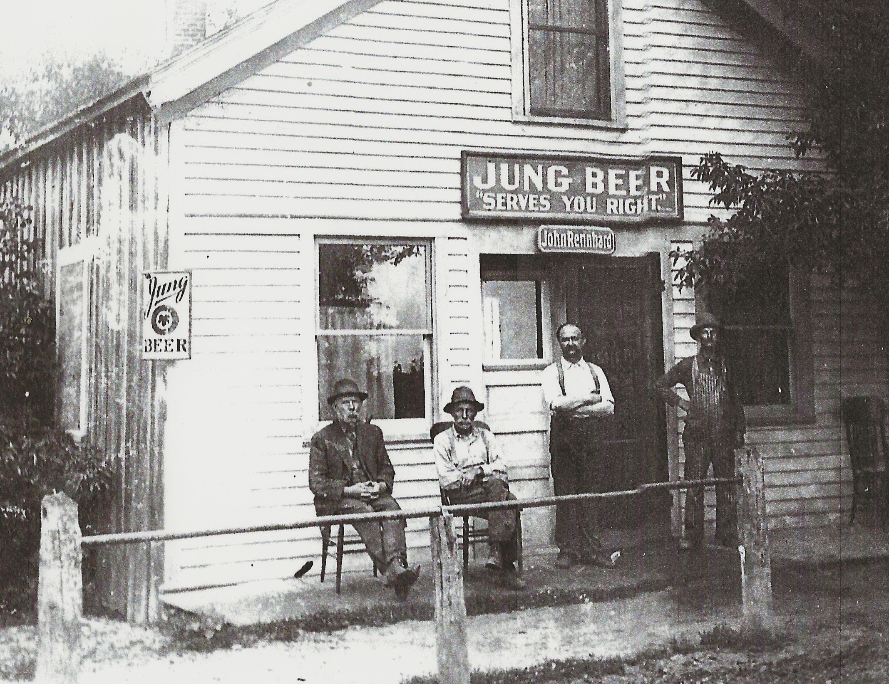
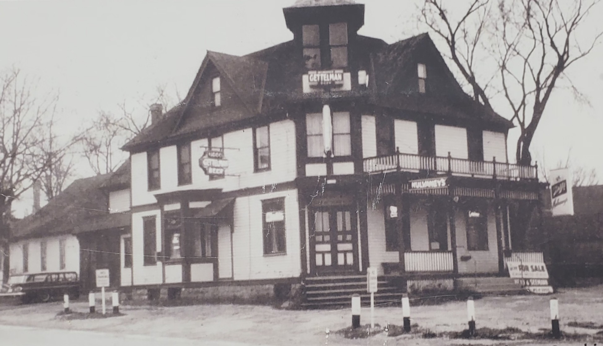
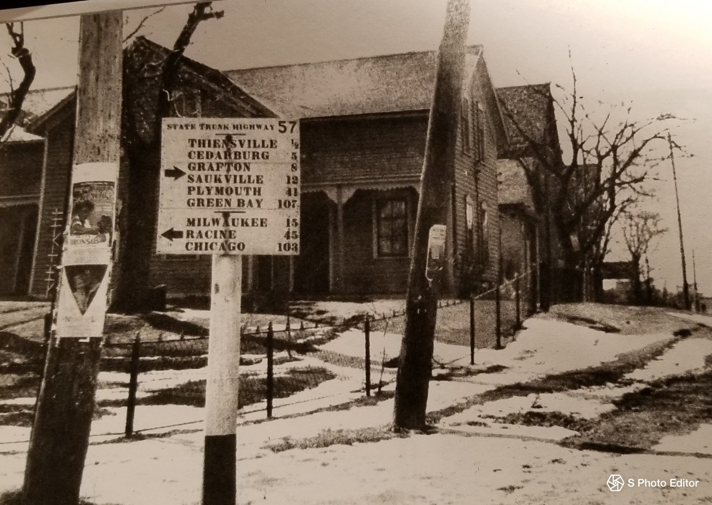
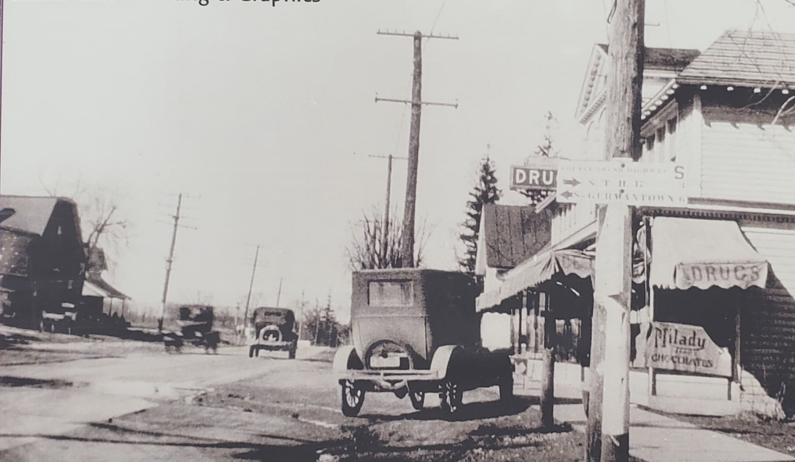
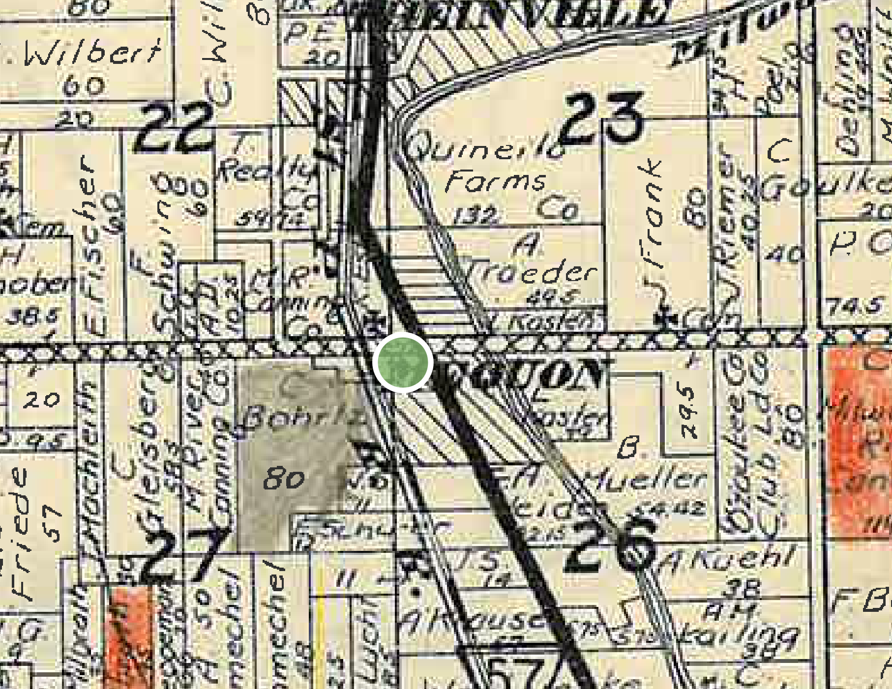

In 1842, Jochim Heinrich Thien built a mill along the Milwaukee River north of the intersection of Cedarburg and Mequon Roads. This became the first center of commercial activity in the Town of Mequon.

In 1850, the Milwaukee-Fond du Lac plank toll road opened along the present Cedarburg Road giving farmers reliable access to markets. It was paved in the 1920s.
The Milwaukee Road railroad arrived in Mequon in 1870, with tracks just west of the intersection.
At each quadrant of the intersection, businesses sprung up.
At the southeast corner, Rennhard’s Tavern.
At the northwest corner, Herzinger's Saloon.
At the southwest, the Herzinger home, ice house, and butcher shop.
Seyfert’s Pharmacy built on the northeast corner.
In 1900, the area was fully platted.
